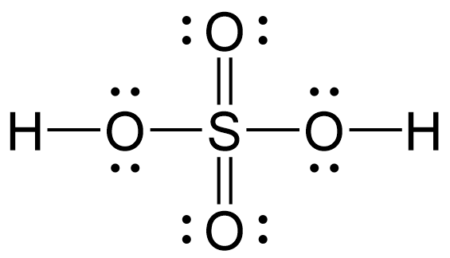
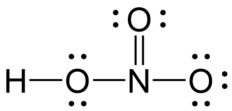
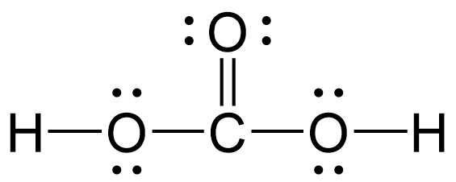

以中心原子之元素名稱命名，後冠以「酸」：
| 化學式 | 標準命名 | 氧化數 |
|---|---|---|
| $\mathrm{H_2SO_4}$ | 硫酸 | $\mathrm{S(+6)}$ |
| $\mathrm{HNO_3}$ | 硝酸 | $\mathrm{N(+5)}$ |
| $\mathrm{H_3PO_4}$ | 磷酸 | $\mathrm{P(+5)}$ |
| $\mathrm{H_2CO_3}$ | 碳酸 | $\mathrm{C(+4)}$ |
| $\mathrm{CH_3COOH}$ | 醋酸（乙酸） | — |
常見含氧酸 Lewis 結構：

$\mathrm{H_2SO_4}$ (硫酸)

$\mathrm{HNO_3}$ (硝酸)

$\mathrm{H_2CO_3}$ (碳酸)
同一非金屬元素可形成多種含氧酸，依中心原子氧化數（氧數）使用前綴詞：
| 化學式 | 中文命名 | 氯氧化數 | 前綴詞規律 |
|---|---|---|---|
| $\mathrm{HClO_4}$ | 過氯酸 | $+7$ | 冠「過」（最高氧化數） |
| $\mathrm{HClO_3}$ | 氯酸 | $+5$ | 標準命名（某酸） |
| $\mathrm{HClO_2}$ | 亞氯酸 | $+3$ | 冠「亞」（較標準少一氧） |
| $\mathrm{HClO}$ | 次氯酸 | $+1$ | 冠「次」（最少氧） |
📌 階梯口訣：「過（氧最多） $\rightarrow$ 標準 $\rightarrow$ 亞 $\rightarrow$ 次（氧最少）」，中心原子氧化數每次遞減 $2$！